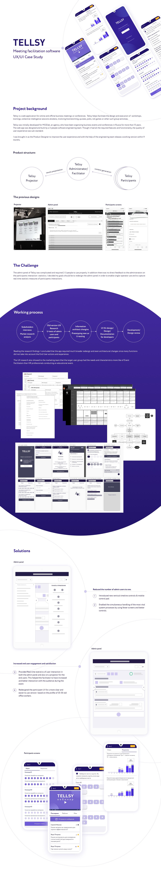

B2B SaaS · 0→1 · Продуктовый дизайн + продакт-менеджмент
Tellsy — платформа для фасилитации, построенная с нуля
Tellsy — веб-приложение для проведения интерактивных бизнес-сессий: воркшопов, стратегических сессий и тренингов — онлайн и офлайн. Я пришла в первый же день как единственный продуктовый дизайнер и построила продукт от начала до конца, а затем осталась как principal product designer и продакт-менеджер, чтобы развивать его и адаптировать под полностью удалённые мероприятия.

Сократили
время подготовки отчёта — с двух дней до 30 мин
Увеличили
вклад в рост бизнеса
Выросла
удовлетворённость участников
Новые
дополнительные возможности делать сессии эффективнее